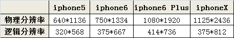

什么是设备像素比?设备像素比就是手机提前内置好的。iphone4的设备像素比就是内置的。 视口加入后，device-width 并不等于设备的物理像素640px。而是等于320px。为什么？因为当加入了视口后，如果设备device-width是320的话，就可以完美的适配原本iphone3gs上出现的网站。从而解决了这个问题。 因为iphone4的物理像素是640 ，逻辑像素是320（css能够控制的像素）。那么640/320 = 2 就称之为iphone4的设备像素比。 device-width = 物理像素/设备像素比。 所以,iphone4的css一行的宽度刚好为320像素，完美适配以前为iphone3gs设计的网页。 2、如何获取屏幕物理分辨率和逻辑分辨？ 1）前端获取逻辑分辨率的方法 逻辑分辨率宽：window.screen.width 逻辑分辨率高：window.screen.height 2）前端获取物理分辨率的方法： 物理分辨率宽：逻辑分辨率宽 * 设备像素比 （window.screen.width * window.devicePixelRatio） 物理分辨率高：逻辑分辨率高 * 设备像素比 (window.screen.height * window.devicePixelRatio)
